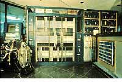
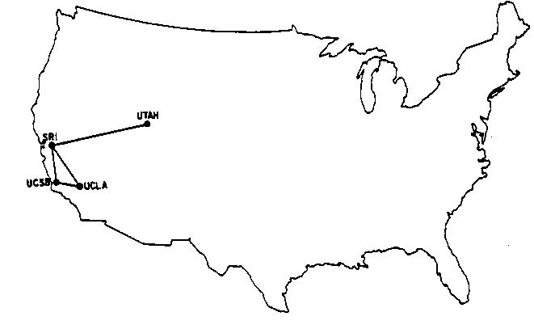

Beginings of the Internet: ARPAnet
The Internet did not start out as the singular network that it appears to be today. At its start, there were many separate networks with little or no linkage between them. The first computer network to be established over a wide area was the US Department of Defense’s (DOD) Advanced Research Projects Agency network, or ARPAnet. Following the Soviet launch of Sputnik President Dwight D. Eisenhower felt that there needed to be both a network of highways connecting American cities and a network between defense and research computers (Gromov). The result was the Interstate Highway System and the DOD’s ARPAnet. A man by the name of Dr. J.C.R. Licklider was put in charge of networking the computers to promote national defense research. "Lick" had the vision of the benefits of computer networks for human communication, but the technological problems of connecting the computers together still had to be overcome.
An ILIAC computer, typical of the "supercomputers" that were connected by ARPAnet
Once the initial problems of connecting the computers together and getting them to "speak" to each other in the same language were solved, the network was technologically free to expand. A computer named an Interface Message Processor (IMP) was instrumental in solving this problem. <T> After the IMP was connected to dedicated phone lines (a network already well established across the nation) the machine’s job was to know where to route the information, check the transmissions for errors and confirm the arrival of each piece of data. Each point on the new ARPA network had to have its own IMP in order to join. The IMPs have evolved from their 1969 (the year of ARPAnet’s implementation) form into the routers that the Internet uses today (Moschovitis).
{kind=link}
ARPAnet in Dec., 1969
It was not long until scientists were discovering methods of linking computers together. In 1970 a network was created between 4 of the Hawaiian islands via radio signals. The network, named ALOHAnet, brought the birth of packet radio, and also the idea to later connect computers together via satellite. <T> These were important discoveries due to the fact that they would evolve into methods of networking that were not tied to wires on the ground.
In 1974, the same company that was contracted
to construct ARPAnet (BBN) created TELEnet as a commercial twin to the
Defense Department’s network. BBN started the company after they
heard that the ARPA network would be handed over to a private company.
Its creation brought the public their first chance to venture into computer
networking. Even though it was in no way tied to the ARPAnet, it was
an important first step toward the commercialization of the Internet.